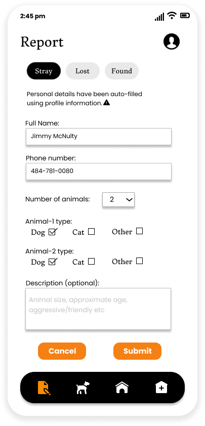

Centralized Animal Rescue or CAR lets users report stray/found animals and sends alerts to a number of animal shelters based on proximity and availability.
Users are first asked to upload a photo of the animal. Users have the option of uploading multiple photos and deleting photos


Next, users are asked to share location information so that the animal shelter employees can track the reported animal.

Users are then asked to describe the animal they intend to report. They are required to check if the animal has owner information on it's tag (if it exists). The animal will be reported as "Found" or "Stray" depending on the existence of tag and owner information. Users are also asked to mention other necessary information such as the behaviour of the animal, type of the animal, it's size etc.
